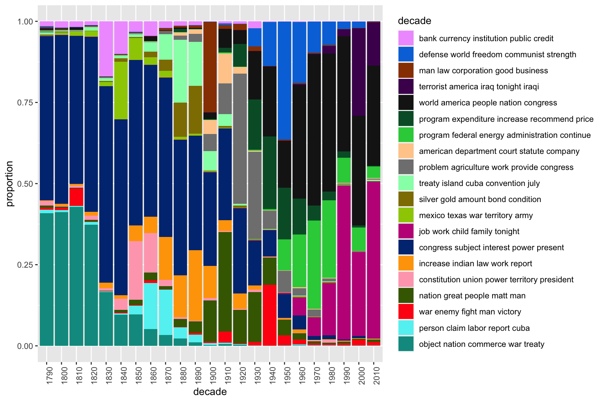

Tutorial 6: Topic Models
Nandish
2020-07-03
This exercise demonstrates the use of topic models on a text corpus for the extraction of latent semantic contexts in the documents. In this exercise we will:
- Read in and preprocess text data,
- Calculate a topic model using the R package topmicmodels and analyze its results in more detail,
- Visualize the results from the calculated model and
- Select documents based on their topic composition.
The process starts as usual with the reading of the corpus data. Change to your working directory, create a new R script, load the quanteda-package and define a few already known default variables.
# setwd("Your work directory")
options(stringsAsFactors = FALSE)
library(quanteda)
require(topicmodels)The 231 SOTU addresses are rather long documents. Documents lengths clearly affects the results of topic modeling. For very short texts (e.g. Twitter posts) or very long texts (e.g. books), it can make sense to concatenate/split single documents to receive longer/shorter textual units for modeling.
For the SOTU speeches for instance, we infer the model based on paragraphs instead of entire speeches. By manual inspection / qualitative inspection of the results you can check if this procedure yields better (interpretable) topics. In sotu_paragraphs.csv, we provide a paragraph separated version of the speeches.
For text preprocessing, we remove stopwords, since they tend to occur as “noise” in the estimated topics of the LDA model.
textdata <- read.csv("data/sotu.csv", sep = ";", encoding = "UTF-8")
sotu_corpus <- corpus(textdata$text, docnames = textdata$doc_id)
# Build a dictionary of lemmas
lemma_data <- read.csv("resources/baseform_en.tsv", encoding = "UTF-8")
# extended stopword list
stopwords_extended <- readLines("resources/stopwords_en.txt", encoding = "UTF-8")
# Create a DTM (may take a while)
corpus_tokens <- sotu_corpus %>%
tokens(remove_punct = TRUE, remove_numbers = TRUE, remove_symbols = TRUE) %>%
tokens_tolower() %>%
tokens_replace(lemma_data$inflected_form, lemma_data$lemma, valuetype = "fixed") %>%
tokens_remove(pattern = stopwords_extended, padding = T)
sotu_collocations <- textstat_collocations(corpus_tokens, min_count = 25)
sotu_collocations <- sotu_collocations[1:250, ]
corpus_tokens <- tokens_compound(corpus_tokens, sotu_collocations)1 Model calculation
After the preprocessing, we have two corpus objects: processedCorpus, on which we calculate an LDA topic model [1]. To this end, stopwords were removed, words were stemmed and converted to lowercase letters and special characters were removed. The second Corpus object corpus serves to be able to view the original texts and thus to facilitate a qualitative control of the topic model results.
We now calculate a topic model on the processedCorpus. For this purpose, a DTM of the corpus is created. In this case, we only want to consider terms that occur with a certain minimum frequency in the body. This is primarily used to speed up the model calculation.
# Create DTM, but remove terms which occur in less than 1% of all documents
DTM <- corpus_tokens %>%
tokens_remove("") %>%
dfm() %>%
dfm_trim(min_docfreq = 0.01, max_docfreq = Inf, docfreq_type = "prop")
# have a look at the number of documents and terms in the matrix
dim(DTM)## [1] 233 9389For topic modeling not only language specific stop words may beconsidered as uninformative, but also domain specific terms. We remove 10 of the most frequent terms to improve the modeling.
top10_terms <- c( "unite_state", "past_year", "year_ago", "year_end", "government", "state", "country", "year", "make", "seek")
DTM <- DTM[, !(colnames(DTM) %in% top10_terms)]
# due to vocabulary pruning, we have empty rows in our DTM
# LDA does not like this. So we remove those docs from the
# DTM and the metadata
sel_idx <- rowSums(DTM) > 0
DTM <- DTM[sel_idx, ]
textdata <- textdata[sel_idx, ]As an unsupervised machine learning method, topic models are suitable for the exploration of data. The calculation of topic models aims to determine the proportionate composition of a fixed number of topics in the documents of a collection. It is useful to experiment with different parameters in order to find the most suitable parameters for your own analysis needs.
For parameterized models such as Latent Dirichlet Allocation (LDA), the number of topics K is the most important parameter to define in advance. How an optimal K should be selected depends on various factors. If K is too small, the collection is divided into a few very general semantic contexts. If K is too large, the collection is divided into too many topics of which some may overlap and others are hardly interpretable.
For our first analysis we choose a thematic “resolution” of K = 20 topics. In contrast to a resolution of 100 or more, this number of topics can be evaluated qualitatively very easy.
# load package topicmodels
require(topicmodels)
# number of topics
K <- 20
# set random number generator seed
set.seed(9161)
# compute the LDA model, inference via 1000 iterations of Gibbs sampling
topicModel <- LDA(DTM, K, method="Gibbs", control=list(iter = 500, verbose = 25))Depending on the size of the vocabulary, the collection size and the number K, the inference of topic models can take a very long time. This calculation may take several minutes. If it takes too long, reduce the vocabulary in the DTM by increasing the minimum frequency in the previous step.
The topic model inference results in two (approximate) posterior probability distributions: a distribution theta over K topics within each document and a distribution beta over V terms within each topic, where V represents the length of the vocabulary of the collection (V = 9379). Let’s take a closer look at these results:
# have a look a some of the results (posterior distributions)
tmResult <- posterior(topicModel)
# format of the resulting object
attributes(tmResult)## $names
## [1] "terms" "topics"ncol(DTM) # lengthOfVocab## [1] 9379# topics are probability distribtions over the entire vocabulary
beta <- tmResult$terms # get beta from results
dim(beta) # K distributions over ncol(DTM) terms## [1] 20 9379rowSums(beta) # rows in beta sum to 1## 1 2 3 4 5 6 7 8 9 10 11 12 13 14 15 16 17 18 19 20
## 1 1 1 1 1 1 1 1 1 1 1 1 1 1 1 1 1 1 1 1nrow(DTM) # size of collection## [1] 233# for every document we have a probability distribution of its contained topics
theta <- tmResult$topics
dim(theta) # nDocs(DTM) distributions over K topics## [1] 233 20rowSums(theta)[1:10] # rows in theta sum to 1## 1 2 3 4 5 6 7 8 9 10
## 1 1 1 1 1 1 1 1 1 1Let’s take a look at the 10 most likely terms within the term probabilities beta of the inferred topics (only the first 8 are shown below).
terms(topicModel, 10)## Topic 1 Topic 2 Topic 3 Topic 4 Topic 5
## [1,] "nation" "public" "present" "congress" "war"
## [2,] "law" "subject" "good" "treaty" "man"
## [3,] "man" "time" "revenue" "act" "fight"
## [4,] "labor" "system" "people" "subject" "force"
## [5,] "power" "bank" "pay" "citizen" "enemy"
## [6,] "people" "duty" "duty" "claim" "great"
## [7,] "interest" "great" "treasury" "part" "plan"
## [8,] "justice" "interest" "price" "duty" "production"
## [9,] "good" "power" "favor" "territory" "american"
## [10,] "act" "general" "purpose" "interest" "army"
## Topic 6 Topic 7 Topic 8
## [1,] "constitution" "world" "department"
## [2,] "union" "great" "american"
## [3,] "congress" "time" "law"
## [4,] "people" "policy" "congress"
## [5,] "power" "matt" "commission"
## [6,] "president" "order" "great"
## [7,] "law" "people" "court"
## [8,] "territory" "nation" "service"
## [9,] "constitutional" "set" "interest"
## [10,] "property" "find" "increase"For the next steps, we want to give the topics more descriptive names than just numbers. Therefore, we simply concatenate the five most likely terms of each topic to a string that represents a pseudo-name for each topic.
top5termsPerTopic <- terms(topicModel, 5)
topicNames <- apply(top5termsPerTopic, 2, paste, collapse=" ")2 Visualization of Words and Topics
Although wordclouds may not be optimal for scientific purposes they can provide a quick visual overview of a set of terms. Let’s look at some topics as wordcloud.
In the following code, you can change the variable topicToViz with values between 1 and 20 to display other topics.
require(wordcloud2)
# visualize topics as word cloud
topicToViz <- 11 # change for your own topic of interest
topicToViz <- grep('mexico', topicNames)[1] # Or select a topic by a term contained in its name
# select to 40 most probable terms from the topic by sorting the term-topic-probability vector in decreasing order
top40terms <- sort(tmResult$terms[topicToViz,], decreasing=TRUE)[1:40]
words <- names(top40terms)
# extract the probabilites of each of the 40 terms
probabilities <- sort(tmResult$terms[topicToViz,], decreasing=TRUE)[1:40]
# visualize the terms as wordcloud
wordcloud2(data.frame(words, probabilities), shuffle = FALSE, size = 0.8)Let us now look more closely at the distribution of topics within individual documents. To this end, we visualize the distribution in 3 sample documents.
Let us first take a look at the contents of three sample documents:
exampleIds <- c(2, 100, 200)
cat(sotu_corpus[exampleIds[1]])
cat(sotu_corpus[exampleIds[2]])
cat(sotu_corpus[exampleIds[3]])## 2: Fellow-Citizens of the Senate and House of Representatives:
##
## In meeting you again I feel much satisfaction in being able to repeat my
## congratulations on the favorable prospects which continue to distinguish
## our public affairs. The abundant fruits of another year have blessed our
## country with plenty and with the means of a flourishing commerce.
##
## The progress of public credit is witnessed by a consi...## 100: To the Congress of the United States:
##
## As you assemble for the discharge of the duties you have assumed as the
## representatives of a free and generous people, your meeting is marked by an
## interesting and impressive incident. With the expiration of the present
## session of the Congress the first century of our constitutional existence
## as a nation will be completed.
##
## Our survival for one hundred years ...## 200: Mr. Speaker, Mr. President, distinguished Members of Congress, honored
## guests, and fellow citizens:
##
## May I congratulate all of you who are Members of this historic 100th
## Congress of the United States of America. In this 200th anniversary year of
## our Constitution, you and I stand on the shoulders of giants - men whose
## words and deeds put wind in the sails of freedom. However, we must always
## remembe...After looking into the documents, we visualize the topic distributions within the documents.
# load libraries for visualization
library("reshape2")
library("ggplot2")
N <- length(exampleIds)
# get topic proportions form example documents
topicProportionExamples <- theta[exampleIds,]
colnames(topicProportionExamples) <- topicNames
vizDataFrame <- melt(cbind(data.frame(topicProportionExamples), document = factor(1:N)), variable.name = "topic", id.vars = "document")
ggplot(data = vizDataFrame, aes(topic, value, fill = document), ylab = "proportion") +
geom_bar(stat="identity") +
theme(axis.text.x = element_text(angle = 90, hjust = 1)) +
coord_flip() +
facet_wrap(~ document, ncol = N)
3 Topic distributions
The figure above shows how topics within a document are distributed according to the model. In the current model all three documents show at least a small percentage of each topic. However, two to three topics dominate each document.
The topic distribution within a document can be controlled with the Alpha-parameter of the model. Higher alpha priors for topics result in an even distribution of topics within a document. Low alpha priors ensure that the inference process distributes the probability mass on a few topics for each document.
In the previous model calculation the alpha-prior was automatically estimated in order to fit to the data (highest overall probability of the model). However, this automatic estimate does not necessarily correspond to the results that one would like to have as an analyst. Depending on our analysis interest, we might be interested in a more peaky/more even distribution of topics in the model.
Now let us change the alpha prior to a lower value to see how this affects the topic distributions in the model.
# see alpha from previous model
attr(topicModel, "alpha") ## [1] 2.5topicModel2 <- LDA(DTM, K, method="Gibbs", control=list(iter = 500, verbose = 25, alpha = 0.2))
tmResult <- posterior(topicModel2)
theta <- tmResult$topics
beta <- tmResult$terms
topicNames <- apply(terms(topicModel2, 5), 2, paste, collapse = " ") # reset topicnamesNow visualize the topic distributions in the three documents again. What are the differences in the distribution structure?
# get topic proportions form example documents
topicProportionExamples <- theta[exampleIds,]
colnames(topicProportionExamples) <- topicNames
vizDataFrame <- melt(cbind(data.frame(topicProportionExamples), document = factor(1:N)), variable.name = "topic", id.vars = "document")
ggplot(data = vizDataFrame, aes(topic, value, fill = document), ylab = "proportion") +
geom_bar(stat="identity") +
theme(axis.text.x = element_text(angle = 90, hjust = 1)) +
coord_flip() +
facet_wrap(~ document, ncol = N)
4 Topic ranking
First, we try to get a more meaningful order of top terms per topic by re-ranking them with a specific score [2]. The idea of re-ranking terms is similar to the idea of TF-IDF. The more a term appears in top levels w.r.t. its probability, the less meaningful it is to describe the topic. Hence, the scoring favors less general, more specific terms to describe a topic.
# re-rank top topic terms for topic names
topicNames <- apply(lda::top.topic.words(beta, 5, by.score = T), 2, paste, collapse = " ")What are the defining topics within a collection? There are different approaches to find out which can be used to bring the topics into a certain order.
Approach 1: We sort topics according to their probability within the entire collection:
# What are the most probable topics in the entire collection?
topicProportions <- colSums(theta) / nrow(DTM) # mean probablities over all paragraphs
names(topicProportions) <- topicNames # assign the topic names we created before
sort(topicProportions, decreasing = TRUE) # show summed proportions in decreased order## [1] "0.28588 : congress subject interest power present"
## [2] "0.12758 : world america people nation congress"
## [3] "0.09253 : object nation commerce war treaty"
## [4] "0.06592 : job work child family tonight"
## [5] "0.04487 : problem agriculture work provide congress"
## [6] "0.04401 : defense world freedom communist strength"
## [7] "0.04336 : program federal energy administration continue"
## [8] "0.04286 : nation great people matt man"
## [9] "0.03726 : program expenditure increase recommend price"
## [10] "0.03643 : increase indian law work report"
## [11] "0.02566 : treaty island cuba convention july"
## [12] "0.02154 : bank currency institution public credit"
## [13] "0.02101 : terrorist america iraq tonight iraqi"
## [14] "0.01915 : constitution union power territory president"
## [15] "0.01826 : war enemy fight man victory"
## [16] "0.01825 : person claim labor report cuba"
## [17] "0.0159 : man law corporation good business"
## [18] "0.0157 : mexico texas war territory army"
## [19] "0.01509 : silver gold amount bond condition"
## [20] "0.00875 : american department court statute company"We recognize some topics that are way more likely to occur in the corpus than others. These describe rather general thematic coherences. Other topics correspond more to specific contents.
Approach 2: We count how often a topic appears as a primary topic within a paragraph This method is also called Rank-1.
countsOfPrimaryTopics <- rep(0, K)
names(countsOfPrimaryTopics) <- topicNames
for (i in 1:nrow(DTM)) {
topicsPerDoc <- theta[i, ] # select topic distribution for document i
# get first element position from ordered list
primaryTopic <- order(topicsPerDoc, decreasing = TRUE)[1]
countsOfPrimaryTopics[primaryTopic] <- countsOfPrimaryTopics[primaryTopic] + 1
}
sort(countsOfPrimaryTopics, decreasing = TRUE)## [1] "106 : congress subject interest power present"
## [2] "40 : world america people nation congress"
## [3] "17 : job work child family tonight"
## [4] "14 : problem agriculture work provide congress"
## [5] "12 : defense world freedom communist strength"
## [6] "8 : nation great people matt man"
## [7] "7 : man law corporation good business"
## [8] "6 : program expenditure increase recommend price"
## [9] "6 : object nation commerce war treaty"
## [10] "4 : program federal energy administration continue"
## [11] "3 : terrorist america iraq tonight iraqi"
## [12] "3 : increase indian law work report"
## [13] "3 : war enemy fight man victory"
## [14] "2 : treaty island cuba convention july"
## [15] "2 : silver gold amount bond condition"
## [16] "0 : bank currency institution public credit"
## [17] "0 : american department court statute company"
## [18] "0 : mexico texas war territory army"
## [19] "0 : constitution union power territory president"
## [20] "0 : person claim labor report cuba"We see that sorting topics by the Rank-1 method places topics with rather specific thematic coherences in upper ranks of the list.
This sorting of topics can be used for further analysis steps such as the semantic interpretation of topics found in the collection, the analysis of time series of the most important topics or the filtering of the original collection based on specific sub-topics.
5 Filtering documents
The fact that a topic model conveys of topic probabilities for each document, resp. paragraph in our case, makes it possible to use it for thematic filtering of a collection. As filter we select only those documents which exceed a certain threshold of their probability value for certain topics (for example, each document which contains topic X to more than Y percent).
In the following, we will select documents based on their topic content and display the resulting document quantity over time.
topicToFilter <- 6 # you can set this manually ...
# ... or have it selected by a term in the topic name
topicToFilter <- grep('mexico ', topicNames)[1]
topicThreshold <- 0.1 # minimum share of content must be attributed to the selected topic
selectedDocumentIndexes <- (theta[, topicToFilter] >= topicThreshold)
filteredCorpus <- sotu_corpus %>% corpus_subset(subset = selectedDocumentIndexes)
# show length of filtered corpus
filteredCorpus## Corpus consisting of 7 documents.
## 56 :
## "To the Senate and House of Representatives of the United Sta..."
##
## 57 :
## "Fellow-Citizens of the Senate and of the House of Representa..."
##
## 58 :
## "Fellow-Citizens of the Senate and of the House of Representa..."
##
## 59 :
## "Fellow-Citizens of the Senate and of the House of Representa..."
##
## 60 :
## "Fellow-Citizens of the Senate and of the House of Representa..."
##
## 61 :
## "Fellow-Citizens of the Senate and House of Representatives: ..."
##
## [ reached max_ndoc ... 1 more document ]Our filtered corpus contains 7 documents related to the topic 12 to at least 10 %.
6 Topic proportions over time
In a last step, we provide a distant view on the topics in the data over time. For this, we aggregate mean topic proportions per decade of all SOTU speeches. These aggregated topic proportions can then be visualized, e.g. as a bar plot.
# append decade information for aggregation
textdata$decade <- paste0(substr(textdata$date, 0, 3), "0")
# get mean topic proportions per decade
topic_proportion_per_decade <- aggregate(theta, by = list(decade = textdata$decade), mean)
# set topic names to aggregated columns
colnames(topic_proportion_per_decade)[2:(K+1)] <- topicNames
# reshape data frame
vizDataFrame <- melt(topic_proportion_per_decade, id.vars = "decade")
# plot topic proportions per deacde as bar plot
require(pals)
ggplot(vizDataFrame, aes(x=decade, y=value, fill=variable)) +
geom_bar(stat = "identity") + ylab("proportion") +
scale_fill_manual(values = paste0(alphabet(20), "FF"), name = "decade") +
theme(axis.text.x = element_text(angle = 90, hjust = 1))
The visualization shows that topics around the relation between the federal government and the states as well as inner conflicts clearly dominate the first decades. Security issues and the economy are the most important topics of recent SOTU addresses.
For more details about topic modeling and some best practice advise, see also [3].
7 Optional exercises
- Create a list of all documents that have a thematic context with economy.
- Repeat the exercises with a different K value (e.g., K = 5, 30, 50). What do you think of the results?
- Split the original text source into paragraphs (e.g. use
strsplit(textdata$text, "\n\n")) and compute a topic model on paragraphs instead of full speeches. How does the smaller context unit affect the result?
References
1. Blei, D.M., Ng, A.Y., Jordan, M.I.: Latent dirichlet allocation. The Journal of Machine Learning Research. 3, 993–1022 (2003).
2. Chang, J.: Lda: Collapsed gibbs sampling methods for topic models. (2012).
3. Maier, D., Waldherr, A., Miltner, P., Wiedemann, G., Niekler, A., Keinert, A., Pfetsch, B., Heyer, G., Reber, U., Häussler, T., Schmid-Petri, H., Adam, S.: Applying lda topic modeling in communication research: Toward a valid and reliable methodology. Communication Methods and Measures. 12, 93–118 (2018).
2019, Andreas Niekler and Gregor Wiedemann. GPLv3. tm4ss.github.io